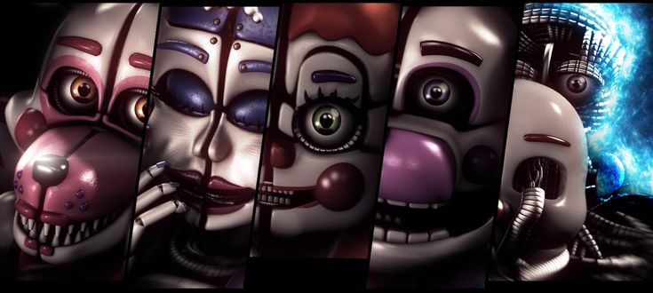
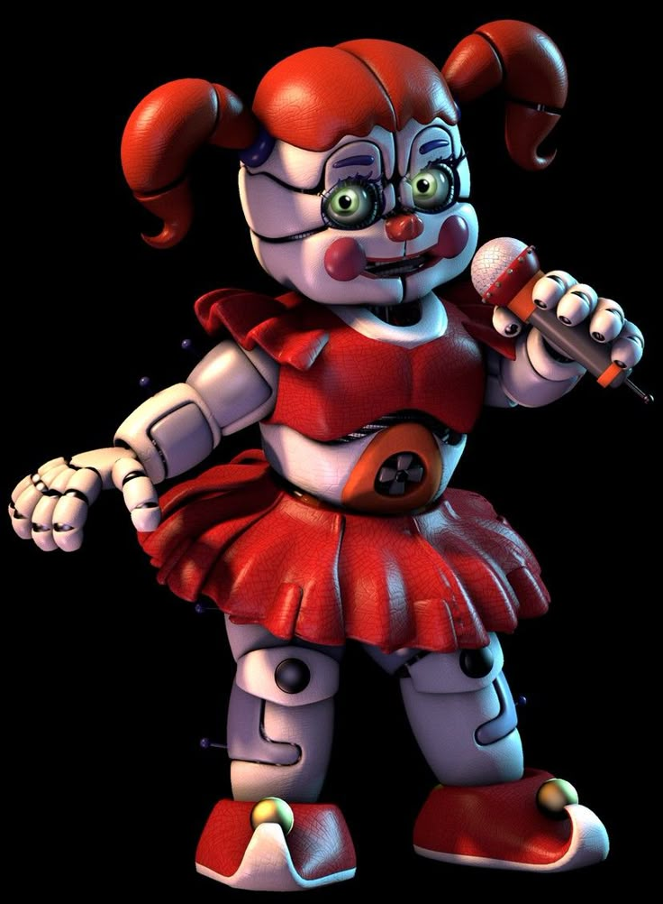
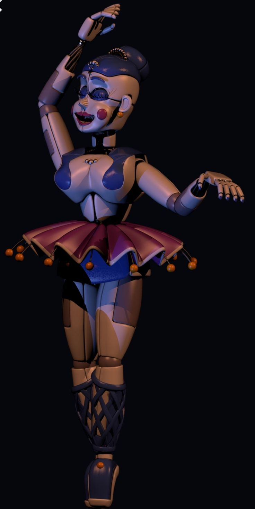
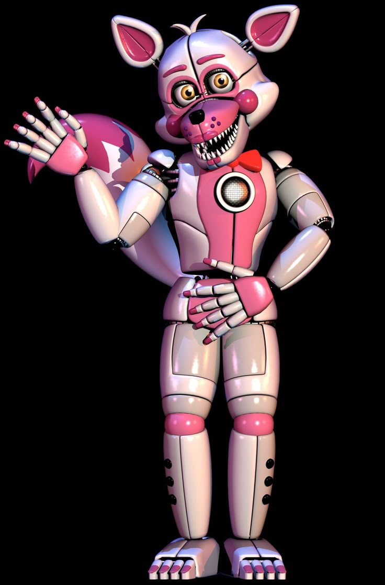
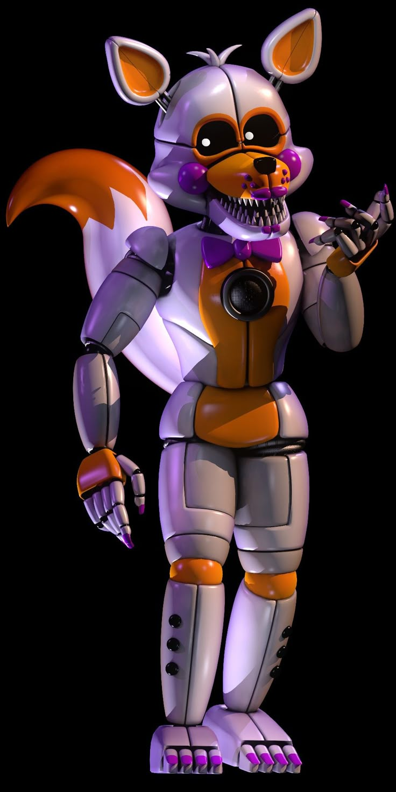
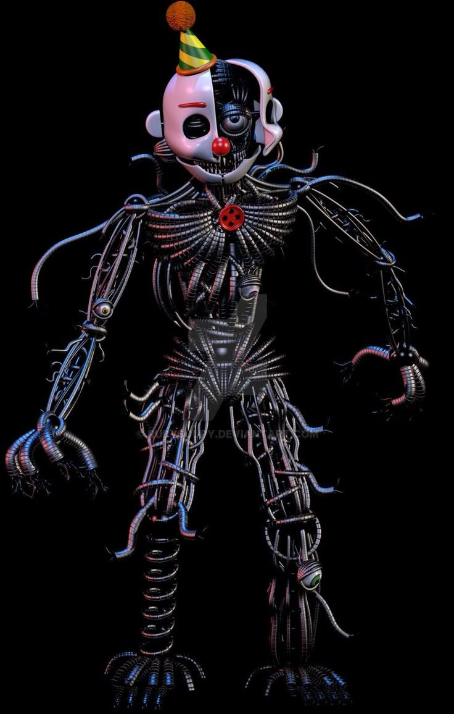

ATENÇÃO
Esta página mostra apenas os personagens do quinto jogo, incluindo os personagens de aparição única entre as noites.
"You must follow my instructions in Funtime Auditorium."/"Você deve seguir minhas instruções no Auditório Funtime."
Circus Baby, ou apenas Baby, é a principal antagonista de Fnaf Sister Location, guiando o protagonista pela instalação subterrânea da Afton Robotics até o fim do jogo, onde acaba se fundindo com os outros Funtimes na forma de Ennard. Ela é a única que não ataca o jogador. Circus Baby foi a responsável pela morte de Elizabeth Afton, filha de William Afton(nesta época Springtrap), devido ao mecanismo de captura embutido na abertura de sua barriga.
"Why to hide inside your walls when there is music in my halls?"/"Por quê se esconder entre essas paredes quando há música em meus corredores?"
Ballora é um dos animatrônicos escondidos na instalação, fica dançando em seu auditório e pode ser vista pela janela do escritório principal durante o tutorial de choque. Para passar por seu auditório, Circus Baby recomenda passar rastejando pelo chão, parando quando a música de Ballora estiver perto e repetindo o processo até chegar na próxima sala.
"It seems that you couldn't make it to my show, so I broght the show to you!"/"Parece que você não pode vir ao meu show, então eu trouxe o show até você!"
Nesta versão, Foxy já não é mais um pirata, mas um(a) animador(a) de festas que ensina as crianças a brincarem e compartilhar. Funtime Foxy fica no auditório Funtime, onde é fornecida uma lanterna que funciona por flash. A cada flash devemos andar um pouco, pois Funtime Foxy se ativa por movimento, o flash serve para localizar Funtime Foxy até que o jogador consiga chegar na próxima sala.
"Well, hello again! Are you ready for round two?"/"Ora, olá de novo! Preparado para o round dois?"
Funtime Freddy fica na Sala dos Disjuntores(Breaker Room) no auditório da Ballora, onde o jogador deve ligar os disjuntores da instalação enquanto usa o sistema de audio embutido em BonBon(o coelho no braço de Freddy) para o distrair.
"I bet you weren't expecting me now, were you?"/"Eu aposto que você não estava me esperando, né?"
Lolbit, a versão alternativa de Funtime Foxy, aparece pela primeira vez na Custom Night do Sister Location como um malfuncionamento nas tvs do escritório. Seu nome, vem de bit(por ser um easteregg localizado em eletrônicos) e LOL(da sigla Laughing out Loud, combinando com sua personalidade caótica e risonha).
Ennard, embora não seja um vilão recorrente na saga ou no próprio jogo, é uma peça crucial para o andamento da história, pois foi ele quem atraiu o protagonista(Michael Afton) para a Scooping Room(Sala da Scoop, usada para desmonfsr animatrônicos) e o matou. Ennard é um emaranhado, uma fusão de todos os funtimes em um corpo só, que adquiriu esta forma para tentar escapar da instalação subterrânea.